By: Team Drag&Drop Since: Jan 2020
1. Introduction
(Contributed by Souwmyaa)
Study Buddy is a desktop application which is designed for students who wish to manage their module related tasks. More importantly, Study Buddy is optimized for those who prefer to work with a Command Line Interface (CLI) while still having the benefits of a Graphical User Interface (GUI). This means that while you primarily interact with Study Buddy through text based commands, each command executed will evoke a visual response as well.
You will never have to remember long, wordy commands to use your command line interface, since Study Buddy provides an interactive way of communication. This not only helps prevent typos, but also makes the application much easier to use!
If you can type fast, Study Buddy can get your module management done faster than traditional GUI apps.
The purpose of this document is to explain in detail, how users can utilize the various commands and functions that Study Buddy provides.
Currently, we support both Windows and Mac operating systems. If you are interested, please jump to the Section 2, “Quick Start” to get started.
Hope you enjoy!
2. Quick Start
-
Study Buddy relies on a particular computer environment to operate correctly, thus to enjoy it, you need to have
Java 11or above installed in your computer. -
When your computer is ready, you can download the latest
studybuddy.jarto get your Study Buddy. -
To better manage your tasks, you may copy the file to the folder you want to use as the home folder for the Study Buddy.
-
Last, double-click the file to start the app and the dashboard should appear in a few seconds.
 Figure 1. Study Buddy Dashboard
Figure 1. Study Buddy Dashboard -
Jump to Section 3.1, “Dashboard” to get more information about dashboard.
-
To view a list of the available commands, you can key in
helpand click Enter. A more detailed description of our features is available in Section 4, “Features” of this document.
2.1. Commonly Used Symbols
(Contributed by Souwmyaa)
| This symbol indicates something you should take note of. |
| This symbol indicates a tip that you could use. |
| This symbol indicates an aspect that should be used with caution. |
| This symbol indicates something to which we want to draw your attention. |
2.2. Useful tips
(Contributed by Souwmyaa)
-
You may need to adjust the size of the Study Buddy window when you launch it.
-
The scroll bar on the right of the response box can be used to view the entire reply.
-
At any point during the execution of a command, you can use
quitto quit the command and start over/try a different command. -
Study Buddy will analyze your input and reply accordingly. It utilizes an "interactive command prompt". (explained in each command’s description under Section 4, “Features”)
-
In this document, enter indicates the enter key on your keyboard.
-
In this document, | indicates an alternative option (i.e. A | B implies A or B).
-
A task’s index number, refers to the number displayed on the left of a task in All Tasks Panel. Note that the index of the same task could be different after some commands, such as
filter,findandsort.
3. User Interface Introduction
Study Buddy makes use of color schemes and animations to enhance your user experience.
3.1. Dashboard
The dashboard is the landing page each time the application is launched.
It consists of different components that can interact with you and provide you with meaningful information.
3.1.1. Navigation Menu Bar
The menu bar is located at the top of the dashboard and is primarily used for navigation.

3.1.2. All Tasks Panel
By default, the All Tasks Panel lists all unarchived task tasks with their detailed information in the order of creation date and time.
Task Badges
To highlight Module code, Task Type and Task Status of each task in the All Tasks list , we use Badges.
- Module Badges
-
-
All in light steelblue.
-
If the task is not related to any module, the Module Badges will be omitted.
-
- Task Type Badges
-
-
Badges of different types are in different colours.
-
- Task Status
-
-
Badges of different status types are in different colours.
-
Tasks that are due within a week (i.e. 7 days) will be marked as
Due Soon. You may need to use the refresh command (Section 4.1.15, “Refresh”) to refresh the status of all your tasks.
-
3.1.3. Tasks Due Soon Panel
The tasks that are due within a week (i.e. 7 days) will be listed here. You can jump to Section 4.3, “Due Soon Tasks” to get more details.

Task Badges
To highlight the Weight & Module Code,
Time left for deadline and Task Type of each task in the Tasks Due Soon Panel , we use Badges.
- Weight & Module Code
-
-
All in steelblue.
-
Display the weight and module code of a task.
-
- Time left for deadline
-
-
All in light orange.
-
Display the time left for a tasks' deadline.
-
More information please refer to Section 4.3, “Due Soon Tasks”
-
- Task Type Badges
-
-
Badges of different types are in different colors.
-
3.1.4. Interactive Prompt Box
The Interactive Prompt Box can be found at the bottom of the user interface.
To interact with Study Buddy, you can enter the desired command in the box with the words Please enter your command here…
and press enter to execute.
The reply from Study Buddy will be displayed in the box above.
| To get more detailed information about how to use Study Buddy, please refer to Section 4, “Features”. |
4. Features
4.1. Basic features
4.1.1. Help
This function displays a list of interactive commands that you can use. It also provides a link to this document, (our user guide).
| This is the command you should use if you are unsure of what to type for a certain command. |
Example:
Say you have forgotten the format of a command and need some help.
Study Buddy provides a help command for your convenience!
To help:
-
Initiate the command using keyword
help -
Study Buddy should respond with:
 Figure 6. Response to 'help'
Figure 6. Response to 'help'
| Remember to scroll down to see the entire reply. |
4.1.2. Add
This command enables you to add a new task into Study Buddy.
-
Through the interaction, task’s details will be collected.
-
Required information: task name, task type, task deadline or duration
-
Optional information: module, task description, task weight, estimated number of hours needed
-
Input format requirement:
Information Type Format Requirement Example MODULE CODE2 or 3 letters + 4 digits + 1 letter (optional)
CS2101, CS2103T,
LSM1101INDEX NUMBER OF
MODULEInteger number
1
TASK NAMENo more than 20 characters
Demo presentation
INDEX NUMBER OF
TASK TYPEInteger number
1
TASK DEADLINE
OR DURATIONDifferent task types apply different date and time format
Deadline (for Assignment):
HH:mm dd/MM/yyyyDuration (for other task types):
HH:mm dd/MM/yyyy-HH:mm dd/MM/yyyyHH → hour, mm → minutes, dd → date, mm → month, yyyy → yearAssignment:
23:59 01/05/2020Meeting:
14:0 15/04/2020-16:0 15/04/2020TASK DESCRIPTIONNo more than 300 characters
this is a valid description
TASK WEIGHTPositive integer or float number from 0.0 to 100.0
12.0
ESTIMATED NUMBER OF HOURS NEEDEDPositive integer or float number
10.0
-
Other constraints::
-
The application does not allow you to enter a name that has special characters (any character that is not a letter in the alphabet).
-
The application does not allow you to assign date time that has already passed to a task. It must be a time in the future.
-
For duration, the two dates should follow the order of
start date-end date, theend dateshould be later thanstart date. -
The total weight of tasks under the same module is capped at 100.0.
-
Both
archivedandnot archived taskswill be taken into consideration. -
This constraint also applies to tasks without module information. Those tasks will be treated as from a same extra module. It is designed for you to practice your time management skill :).
-
-
All
index numbersentered should be positive and within a valid range. (i.e When there is only 5 modules available, the valid module index number range is 1 to 5). -
The "Required Information" cannot be empty, on the other hand, you can press enter to skip the "Optional Information".
-
-
Adding duplicate tasks:
-
Look at Section 4.1.3, “Add duplicates” for more information.
-
-
To add:
-
Initiate the command using keyword
add+ enter. -
Study Buddy should start with asking module information with
a list of available modulesas: Figure 7. Reponse to 'add', asks for module
Figure 7. Reponse to 'add', asks for module -
You can link this task with a module by entering its
MODULE CODE|INDEX NUMBER OF MODULEhere , or you can press enter to skip. Here we use "1" (CS2101) as an example. -
After the selection of module, Study Buddy should ask for the task name. Here we use "new task" as an example.
-
After entered the task’s name and press enter, Study Buddy should prompt for task type with the list of available types as:
 Figure 8. Asks for task’s type
Figure 8. Asks for task’s type -
You can use the
INDEX NUMBERhere to choose a task type. Here we use "1" (Assignment) as an example. -
After the selection of task type, Study Buddy will prompt for new task’s date-time information together with the type related date-time format (i.e. different task types support different date-time formats). Here we use "14:00 04/05/2020" as an example.
-
Next, Study Buddy should ask for the new task’s description, and we use "new task description" as an example.
-
Then, Study Buddy should ask for the new task’s weight. Here we use "10" as an example.
-
Next, Study Buddy will prompt for the estimated number of hours needed for this new task. Here we use "10" as an example.
-
Once you specify the estimated time needed and press enter, Study Buddy should respond with the task details collected and ask for your confirmation to add the task as:
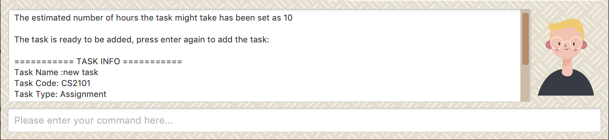Figure 9. Asks for user conformation to add a new task Figure 10. Task details collected
Figure 10. Task details collected -
Now, by pressing enter the new task will be added into your Study Buddy. Meanwhile, the All Tasks Panel will update accordingly. For this example, the panel should update as below.
 Figure 11. New task added
Figure 11. New task added
Remember, you can use quit command to quit at any step.
|
4.1.3. Add duplicates
(Contributed by Souwmyaa)
This command accounts for you adding duplicate tasks. When you attempt to add a duplicate, the name will be modified slightly so that you can differentiate them.
Example:
Say you have tried to add a task, you enter all the fields needed and at the end, you realise that you have already added this task.
Study Buddy lets you add duplicate tasks with a slight modification! So, now you can add the task and edit it as needed.
| A task is considered duplicate when the name, type, module, description, weightage, estimated time cost and deadline are the same. |
| This feature is case sensitive i.e if you have one task named "Homework" and another named "homework", they will be considered to be different. |
To add duplicates:
-
Follow the same steps as in Section 4.1.2, “Add”, but enter a duplicate task.
-
Study Buddy should respond with:
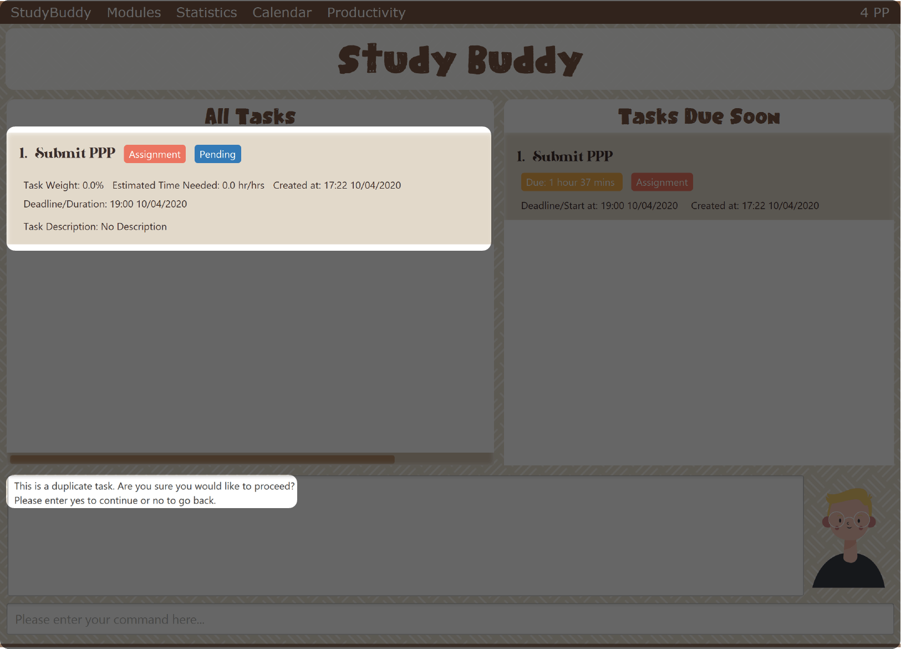Figure 12. Reponse to adding a duplicate -
Type in
yesif you would like to continue andnoif you do not. -
If you type
yesand press enter -
The Study Buddy should respond with:
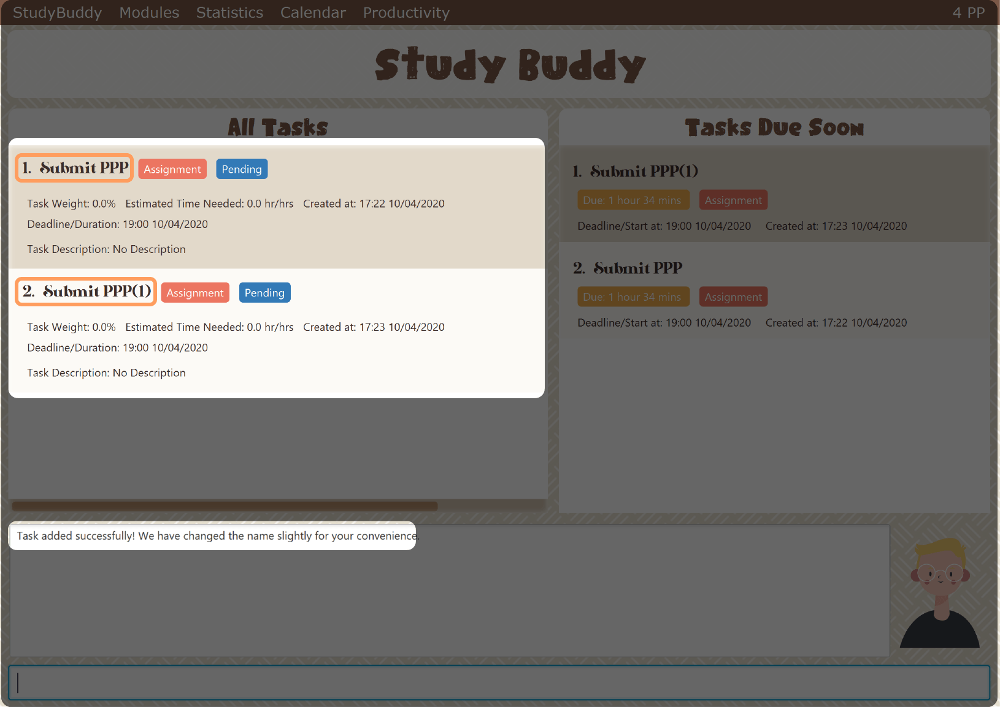Figure 13. Response to adding duplicate -
As you can see in the snippet above, Study Buddy will append a number in brackets to the task name. This number corresponds to the number of times this task name has been duplicated.
If you add two duplicates of a task (eg: task(1) and task(2)), and then delete task(1), when u try to duplicate it again, it will get added as task(3). The number will not reset to 2, because this is the third time you are attempting to duplicate. -
If you choose to enter
noat step 2, this is what you will see. Figure 14. Response to choosing not to add
Figure 14. Response to choosing not to add
| You can view all tasks that have been auto-edited this way, using the Section 4.1.8, “View renamed” |
| Use the Section 4.1.4, “Edit” to edit your duplicated tasks! |
4.1.4. Edit
This command is for you to edit an existing task. To indicate the task you want to edit, you need to provide its index number.
Example:
Say when there are some typo in an existing task. You can use this command to edit as you wish.
Constraints
-
Each new value entered will be checked under the same constrain of add command. More info you can refer from Section 4.1.2, “Add”.
-
When editing weight or module, the application will also make sure the total weight of related module’s tasks will not overflow (i.e. exceed 100).
-
You cannot edit a task to be a duplicate. i.e all the fields cannot be the same as a task that already exists.
-
Due to the
deadline/Duration formatis different fromAssignmenttoOther Task Types, we currently don’t support:-
Assignment→Another Tsk Typeediting -
Another Tsk Type→Assignmentediting
-
To edit:
-
Initiate the command using keyword
edit+ enter. -
Study Buddy should start the task editing interaction by asking you the index number of the desired task. Here use "1" (Homework 1) as an example.
-
When you specified the target task, Study Buddy should continue the interaction by prompting you with the list of editable information. You can choose any of them via an index number. Here we use "2" (Task name) as an example.
Figure 15. List of editable fields -
After you selected the field to edit, Study Buddy should asks you for the new value. For this example, let’s use "Updated Task" as the new task name.
-
Once you specified the updated information and press enter, the updated record will be captured, and the All Tasks Panel will update automatically. For this example, the panel should update as below.
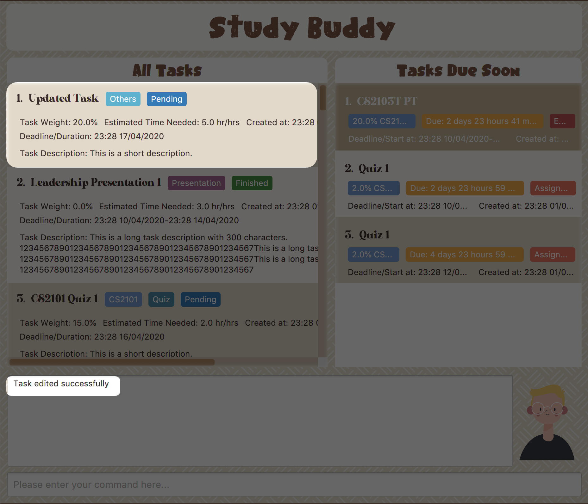Figure 16. Task edited
4.1.5. Done
This command is for you to mark a task as Finished.
Constraints
-
A Finished task cannot be marked as Finished again.
To done:
-
Key in
doneand press enter, you should get this prompt: Figure 17. Asks for task index.
Figure 17. Asks for task index. -
Now key in the index of the task you wish to complete.
-
Press enter again to confirm your change.
 Figure 18. Asks for confirmation
Figure 18. Asks for confirmation -
Task set to
Finishedsuccessfully! Note that the task in your task list has the tagFinished. Figure 19. Done result
Figure 19. Done result
You can choose to archive your completed task using the archive command.
Check more details from Section 4.1.9, “Archive/ Unarchive”.
|
4.1.6. Clear
(Contributed by Souwmyaa)
This commands clears all data in the Study Buddy.
| Be careful with this command! It will remove any data you may have entered into the Study Buddy and you cannot retrieve it. |
Example:
Say you have finished a semester and would like to clear everything in your Study Buddy and start over.
You can always clear everything!
To clear:
-
Initiate the command using keyword
clear -
Study Buddy should respond with:
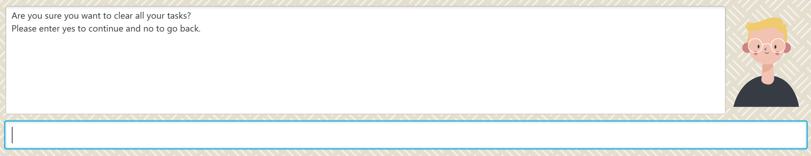Figure 20. Response to 'clear' -
Type yes and hit enter again to confirm
-
Study Buddy has been cleared completely!
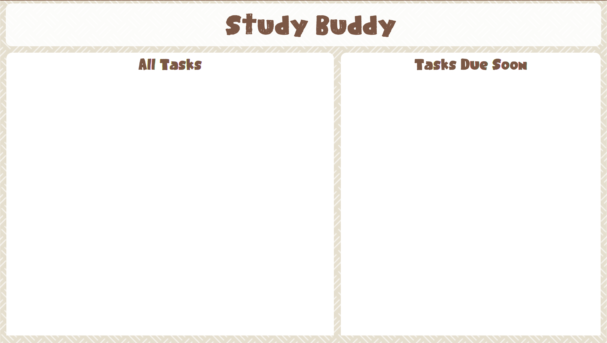Figure 21. View empty Study Buddy -
At step 2, if you choose to type no and hit enter, this is what you will see.
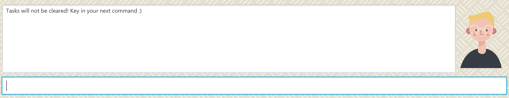Figure 22. Response to choosing not to clear
4.1.7. Delete
(Contributed by Souwmyaa)
This commands deletes a task from the existing list, using the index provided by you. Index simply refers to the number on the left of the task in the All Tasks panel.
| Once a task is deleted, it cannot be retrieved. Use this command with caution! |
Example:
After having added a task, you realise that there has been a change and you do not need to do that task anymore.
Study Buddy provides you an option to delete that task from the list!
To delete:
-
Initiate the command using keyword
delete -
Study Buddy should respond with:
 Figure 23. Response to 'delete'
Figure 23. Response to 'delete' -
Type the index of the task you want to delete. In this case, the index entered is 1.
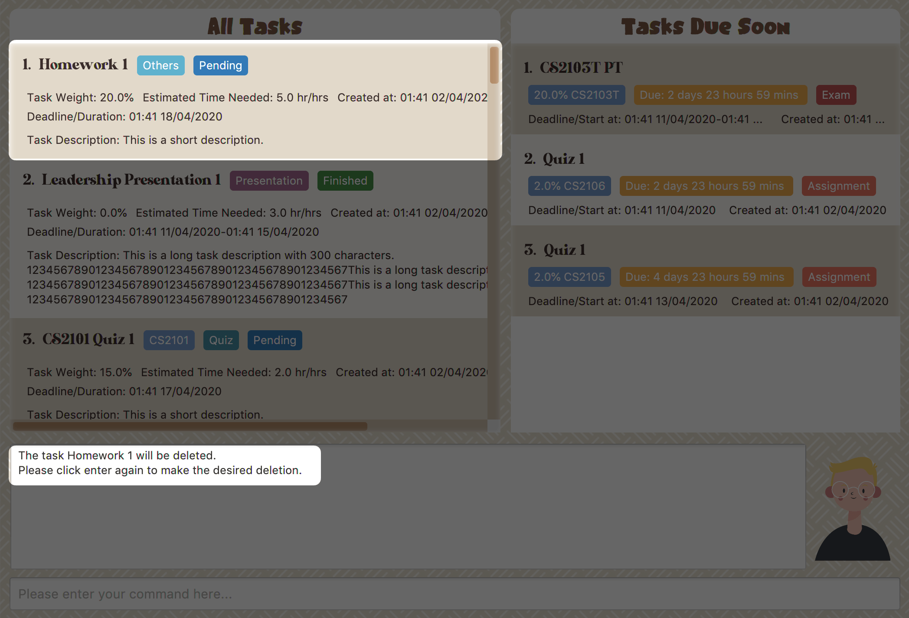Figure 24. Asks for confirmation -
Press enter again to confirm
-
Task has been deleted! You will notice that the task at the index you selected has disappeared from the list of tasks.
 Figure 25. Updated All Tasks Panel
Figure 25. Updated All Tasks Panel
4.1.8. View renamed
(Contributed by Souwmyaa)
This commands filters all renamed tasks in the list i.e tasks that have a number appended to their names.
Example:
Say you want to go back and edit all the renamed tasks in your list. However, you do not want to scroll through the entire list to find them.
Study Buddy provides you an option to view all your renamed tasks in the list!
| You will still need to navigate to the main list and use that index to perform any index based operations (eg: delete, edit etc) |
To view renamed:
-
Initiate the command using keyword
view renamed -
Study Buddy should respond with:
 Figure 26. Response to 'view renamed'
Figure 26. Response to 'view renamed' -
Press enter again to confirm
-
Renamed tasks have been filtered!
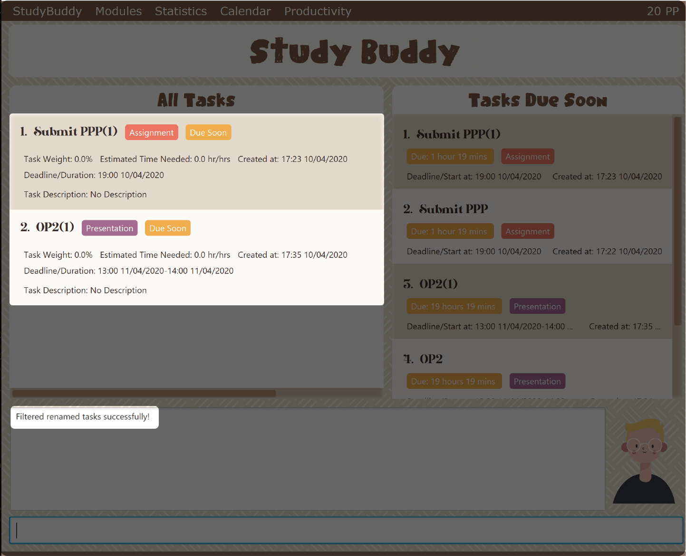Figure 27. Updated list of renamed tasks
| In order to navigate back to the main list, use Section 4.1.12, “List” |
4.1.9. Archive/ Unarchive
This commands stores the specified task into a separate list.
Example:
After a hard days work, you completed some tasks. You don’t want them in your to-do list anymore, but you don’t want to delete them; some of the information in the task card could still be useful.
You can always store them in an archive!
To archive:
-
Initiate the command using keyword
archive -
Study Buddy should respond with:
 Figure 28. Response to 'archive'
Figure 28. Response to 'archive' -
Type the index of the task you want to archive, here use "1" (Leadership Presentation) as an example.
-
Study Buddy will ask for your confirmation before archive the target task.
 Figure 29. Asks for confirmation
Figure 29. Asks for confirmation -
Press enter again to confirm, the task will be archived and the user interface will update.
 Figure 30. Task is archived successfully
Figure 30. Task is archived successfully -
You can view the archived task under the
StudyBuddy→Archived Taskstab.Figure 31. Navigates to archived tasksFigure 32. Archived tasks
| If you attempt to unarchive a task that already exists in the main list, the name will automatically be appended with a number in order to avoid duplication. This is done in the same way as Section 4.1.3, “Add duplicates” |
4.1.10. Sort
This command is for you to reorder the task list in All Tasks Panel.
- Currently you can sort tasks by their
-
-
Deadline / Task Start Date
-
Task Name
-
Creation Date & Time
-
Example
When you want to sort all your unarchived tasks by their deadline or start date, you may utilize this command to achieve the desired order.
To sort:
-
Initiate the command using keyword
sort+ enter. -
Study Buddy should provide the list of sorting options as below， and you can use the index number to select the desired sort. Here we use
1(Deadline / Task Start Date) as an example. Figure 33. Sorting options and the order of the tasks before sort
Figure 33. Sorting options and the order of the tasks before sort -
After the selection, Study Buddy should ask for your confirmation to perform the reorder. You can press enter again to confirm. Meanwhile, the tasks in All Tasks Panel will be sorted accordingly.
Figure 34. The order of the tasks after sort
|
The tasks in All Tasks Panel will not change back to the original order by itself. You can use sort → Creation Date & Time to do so.
|
4.1.11. Find
Finds tasks whose names contain any of the given keywords.
To find a task:
-
Initiate the command with
find. -
Study Buddy should respond with:
 Figure 35. Response to 'find'
Figure 35. Response to 'find' -
Enter the keyword that you want to search for, e.g. quiz, and press enter to confirm sorting.
-
You have found a list of tasks that contain your keyword!
 Figure 36. Find result
Figure 36. Find result
| To navigate back to the full list of tasks, you can use the Section 4.1.12, “List” function. |
4.1.12. List
Oh no!
How do I get the original list back after using find?
Calm down and use the list command!
The list command lists all the tasks that have been created in StudyBuddy.
To use the list command:
-
Initiate the command with
list. -
Done! All your tasks are listed once again!
Figure 37. List result
4.1.13. Goal
Want to challenge yourself to complete tasks? You can set your daily goal using goal.
To use the goal command:
-
Initiate the command with
goal. StudyBuddy should reply with:Figure 38. Prompt after enteringgoal -
Now enter the number of tasks that you want to complete today. It should be a number between 1 and 100. As usual, hit Enter once you’re done.
-
Your goal has been set and reflected on the Daily goal tracker. All the best in achieving it!
Figure 39. Prompt after entering the number 7
| Your daily goal is displayed on the Productivity Page. You can find more information about the Productivity Page in Section 4.7, “Productivity”. |
4.1.14. Filter
(Contributed by Souwmyaa)
This commands helps you filter your tasks by category. The two categories available are status and type.
| Note that Due Soon tasks are already filtered for you. Refer to Section 4.3, “Due Soon Tasks” |
| To navigate back to your main list, check out Section 4.1.12, “List” |
Example:
Say you want to view a list of all your pending tasks.
Study Buddy provides an option to filter your list!
To filter:
-
Initiate the command using keyword
filter -
Study Buddy should respond with:
 Figure 40. Response to 'filter'
Figure 40. Response to 'filter' -
Enter your choice. If you enter 1, you have chosen to filter by status.
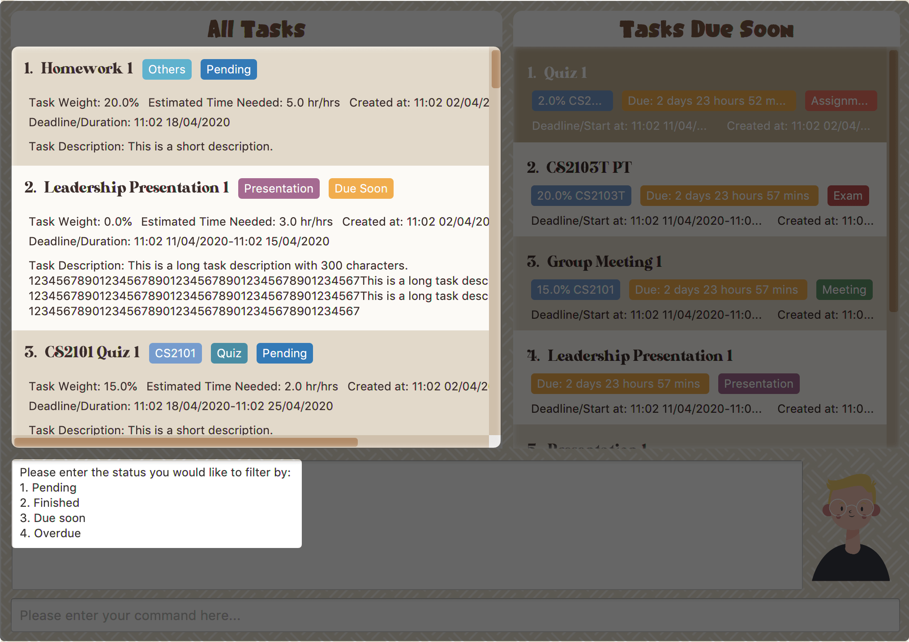Figure 41. Response to filter by 'status' -
You can then proceed to choose what status type you would like to filter by. Here we have filtered by "Pending" as an example.
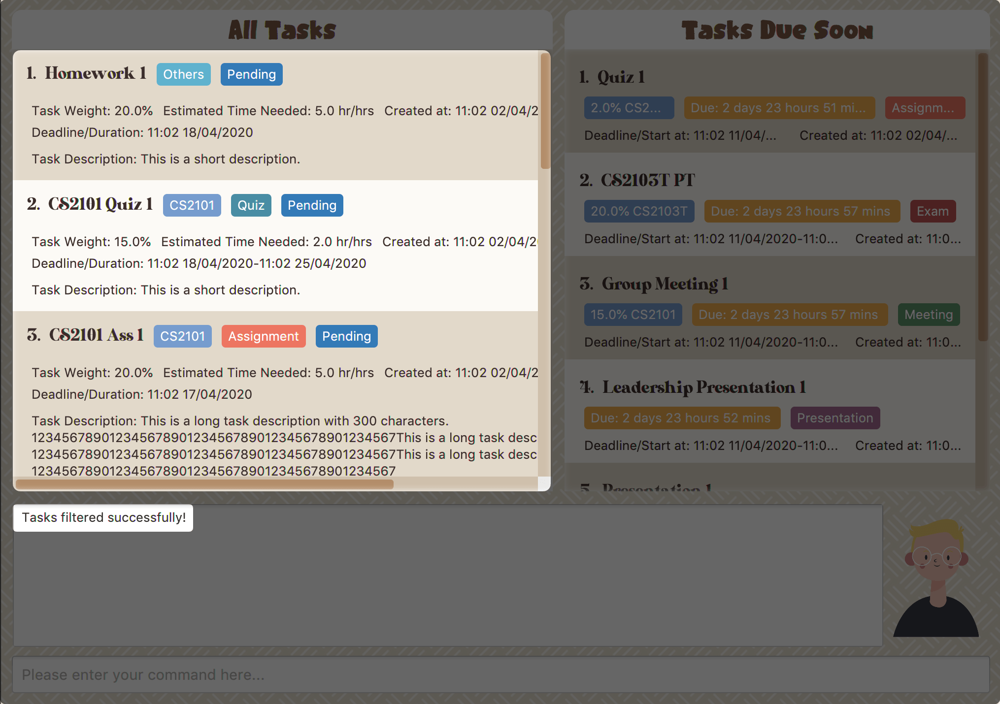Figure 42. Response to filter by status tag 'Pending' -
At point 3 above, if you enter 2 instead, you have chosen to filter by task types.
 Figure 43. Response to filter by task 'type'
Figure 43. Response to filter by task 'type' -
Once again, imagine your study buddy currently looks like Figure 30 above. (at point 4)
-
You can then proceed to choose what task type you would like to filter by. Here we have filtered by "assignment" as an example.
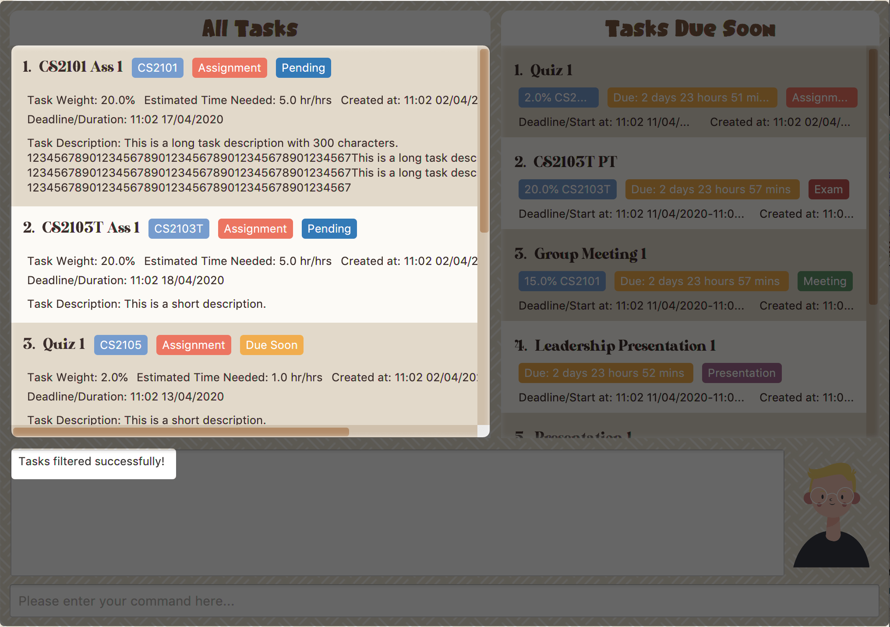Figure 44. Response to filter by task type 'assignment'
4.1.15. Refresh
(Contributed by Souwmyaa)
This commands refreshes the list of tasks Due Soon as well as status tags.
| Due soon list shows tasks due within the next week. Details are in Section 4.3, “Due Soon Tasks” |
| Status tags include information on the tasks' status, eg: pending, overdue etc. |
Example:
Say you left Study Buddy open for a few days. When you come back, you notice that the time left for the deadline on the Due Soon tasks is not accurate.
You can refresh them!
| Anytime you notice an inconsistency in time left/status, use this command! |
To refresh:
-
Say this is what Study Buddy looks like and you notice that the task "Homework 1" is still in pending status although it should be in due soon status.
 Figure 45. Current state (needs to be refreshed)
Figure 45. Current state (needs to be refreshed) -
Initiate the refresh command using keyword
refreshand press enter to confirm the action. -
Tasks have been refreshed! You will notice that the pending task has now moved to the due soon list and the status has been updated.
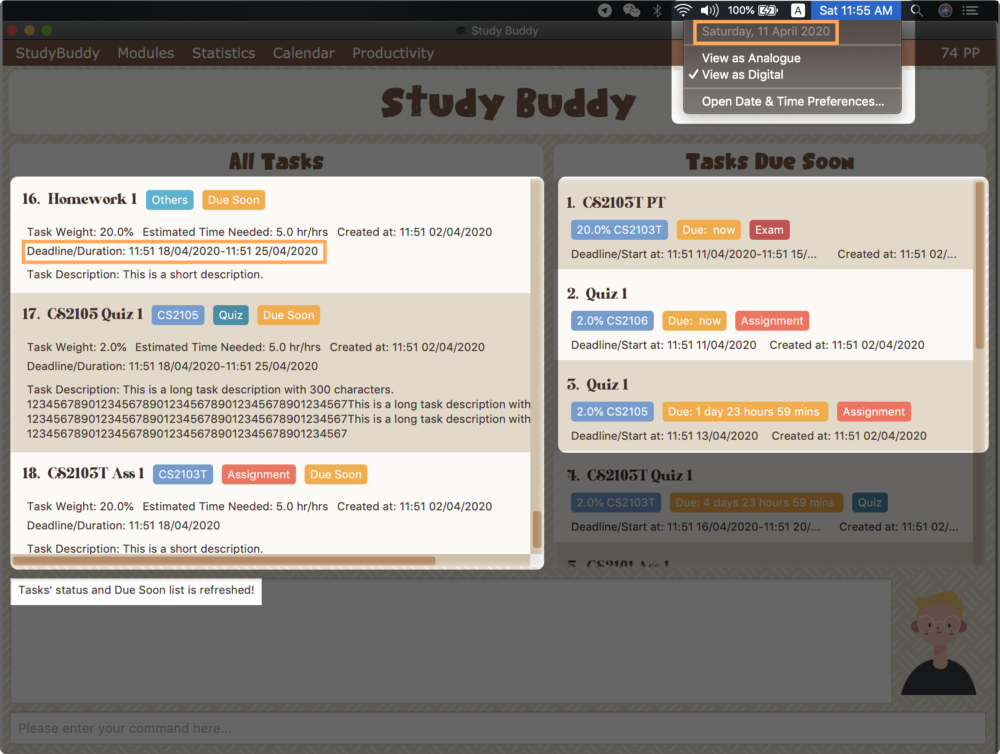Figure 46. Refreshed Study Buddy
| After 'refresh', the tasks in All Tasks Panel will be sorted by their deadline or start date. |
4.1.16. Exit
(Contributed by Souwmyaa)
This command exits from Study Buddy.
| All your data will be saved and reloaded when you open the application later! You can find details about this in Section 4.2, “Saving Data” |
Example:
After working all day, you would like to close the application and have a good night’s sleep.
You can always exit the application!
To exit:
-
Initiate the command using keyword
bye -
Study Buddy should respond with:
 Figure 47. Response to 'bye'
Figure 47. Response to 'bye' -
Type 'yes' and press enter to exit, the Study Buddy window will close automatically.
-
If instead, you type 'no' and press enter, this is what you will see,
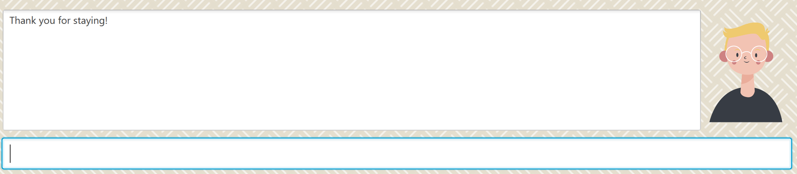Figure 48. Response to choosing not to exit
You can still use quit command to go back!
|
4.2. Saving Data
(Contributed by Souwmyaa)
Study Buddy data is automatically saved in the hard disk after any command that changes the data.
There is no need to save manually.
When the application is closed and re-opened, you should be able to see all the data you have added previously!
4.3. Due Soon Tasks
(Contributed by Souwmyaa)
The Due Soon task list is always on display in your application under Study Buddy → All tasks
It provides the following functionality:
-
It displays your tasks that are due within the next week. (uses deadline you have provided)
 Figure 49. Due Soon List
Figure 49. Due Soon List -
It automatically sorts these tasks in an ascending order of deadlines.
 Figure 50. Due Soon List Auto-Sort
Figure 50. Due Soon List Auto-Sort -
It automatically adds applicable tasks when you make changes to your main list, such as add (Section 4.1.2, “Add”) or delete (Section 4.1.7, “Delete”).
-
It displays a tag with the time left to the deadline.
 Figure 51. Due Soon List Time Tags
Figure 51. Due Soon List Time Tags -
It provides a Section 4.1.15, “Refresh” function that allows you to refresh time/state of this list if needed.
| Time left is never displayed in days and minutes. Hence if the current time is 9:00 am on 01/04/2020 and the task deadline is 9:02 am on 02/04/2020, it will show time left as 1 day. (not 1 day and 2 minutes) |
| Due soon list will never display finished tasks. eg: if you unarchive a completed task, it will not appear in the Due Soon list. |
4.4. Modules
The modules page organises your tasks into various modules. By default (i.e, when there is no module created), the modules page shows the following:
-
Overview. This tab shows all the modules you created.
-
No Module Allocated. This tab shows the list of tasks that has not yet been allocated to any module. By default, all tasks will show up here if you have not allocated any tasks to the modules.
 Figure 52. modules page
Figure 52. modules page
4.4.1. Navigation
- Navigate to modules page
-
-
To navigate to the modules page, click on
Modules→Show Modulesin the menu bar or press F1 in your keyboard.Figure 53. Modules dropdown menu
-
- Navigation in modules page
-
-
The clicking on the leftmost tab shows the
Overviewof all your modules. it displays the module’s name and their code. Figure 54. Module tab
Figure 54. Module tabOverview -
The rightmost tab shows the list of task that has not been allocated to any modules.
 Figure 55. Module tab
Figure 55. Module tabNo Module Allocated -
The tabs in the middle are modules that you have added to the modules page.
 Figure 56. Module tab available modules
Figure 56. Module tab available modules
-
4.4.2. Functions
Create Modules
Study Buddy provides tow approaches for user to execute create module and edit module actions.
|
To start the interaction of creating a module, click on Modules→ Create in the menu bar.
Alternatively, you can key in create mods into the input line.
Constraints
-
Module Name
The name of this module cannot be the same as any existing modules. -
Module Code Format
-
The module code also need to be unique.
-
The module code should have a 2-3 letter prefix, a 4-digit number, followed by a single postfix.
-
Correct Module Code Examples
LSM1303
CS2040C
IS1103
MA1521 -
Incorrect Module Code Examples
CSSS1234 - Prefix is too long
C0001 - Prefix is too short
ZZ12345 - number is more than 4 digits
A1111XX - Postfix is too long
-
-
To Create Module:
-
Click on
Module→Createor key increate mods. A prompt will show up at the bottom of the screen. Figure 58. Asks for module name
Figure 58. Asks for module name -
Key in the name of your module.Here we use "New Module" as an example. Then Study Buddy will ask for the module code.
 Figure 59. Asks for module code
Figure 59. Asks for module code -
Here we use "CSS1234" as an example.
 Figure 60. Asks for confirmation
Figure 60. Asks for confirmation -
Press enter to confirm, and the module page will update accordingly.
 Figure 61. New Module with code CSS1234 created.
Figure 61. New Module with code CSS1234 created.
Congratulations, you have added a module to your modules page!
4.4.3. Edit Modules
To start the interaction of editing a module, click on Modules→ Edit in the menu bar.
Alternatively, you can key in edit mods into the input line.
Study Buddy provides three module editing options.
- Edit options
-
-
Change Module name.
-
Change Module code.
-
Delete Module.
-
Constraints:
-
When choosing the module to edit, you need to provide a valid and existed module code.
-
When entering the value of new module name or new module code, you need to provide a different valid value.
-
The above "valid" judgment follows the same constraints as Section 4.4.2.1, “Create Modules”.
To Edit Module:
-
Click on
Module→Editkey in edit mods. A prompt will show up to ask the module code of target module. Figure 63. Asks for module mode
Figure 63. Asks for module mode -
Key in the code of the module that you want to edit. Here we use "CSS1234" as an example. Then Study Buddy will ask for the edit option.
 Figure 64. Asks for edit option
Figure 64. Asks for edit option -
Key in the index of your option.
-
"1" → Change Module Name
Key in your new module name and press enter to confirm the editing. Here we use "Edited Module Name" as an example.
The module page will update accordingly. Figure 65. Module name editing result
Figure 65. Module name editing result -
"2" → Change Module Code
Key in your new module code and press enter to confirm the editing. Here we use "LY3000" as an example.
The module page will update accordingly.Figure 66. Module code editing resultModule code changed!
-
"3" → Delete Module
After successfully deleting a module, the related tasks will also be affected. To delete the chosen module, you only need to press enter to confirmed the deletion. To better showcase the behaviour of deletion, here we use "CS2103T" as an example.
-
Before delete:
 Figure 67. Before delete
Figure 67. Before delete -
After delete:
After successfully deleted target module, the module page will update accordingly and switch toOverviewpage.If you switch to
No Module Allocatedtab, you’ll find the tasks affected by this deletion (i.e. The tasks which belong to the deleted module). Figure 68. Checking the affected tasks
Figure 68. Checking the affected tasks
-
-
4.5. Statistics
With all the tasks and modules' information you entered, Study Buddy can provide you with a real-time visualized statistics about:
-
Task status
-
Module related tasks' deadline/ start date
-
Module related tasks' weight
It utilizes different types of charts to make the information more intuitive.
In addition, the chart is always updated in sync with your task records.
Especially when you execute commands such as
add edit delete sort find archive done list and clear.
| The colour theme will also change randomly, hope you enjoy :) |
|
The statistics feature is built on top of the data collected from the basic functionality described in Section 4.1, “Basic features”.
Which means Study Buddy only supports keyboard input for statistics generating. Therefore, even though this feature involves mouse-clicking, it is still designed for a fast typist. |
4.5.1. Navigate to Statistics Page
You can navigate to Statistics page by clicking the Statistics from the menu bar.
4.5.2. Statistics Page User Interface and Interaction
The left panel contains different charts for different statistics. You can use the tabs circled in light orange to navigate.
When you click on a statistics chart, the associated task records will be listed automatically in the right-side panel.
Task Status Tab
- Introduction
-
This clickable pie chart compares the number of tasks in different statuses.
Figure 71. Task Status Chart - Clicking Action
-
When you click on the chart, all tasks with the selected status will display on the right-side panel automatically.
Here is an example when you are clicking on the Due Soon portion.
-
The part highlighted by light purple lines represents all your Due Soon tasks. When you are clicking on it, all tasks with Due Soon status will be listed in the right-side panel.
You can refer to the screenshot below where the relevant information is highlighted for you.
 Figure 72. Clicking on 'Due Soon' part
Figure 72. Clicking on 'Due Soon' part
-
Module Related Tasks' Deadline/Start Date Tab
- Introduction
-
This clickable area chart summarizes the task deadlines or start dates for different modules.
 Figure 73. Module Related Tasks' Deadline/Start Date Chart
Figure 73. Module Related Tasks' Deadline/Start Date Chart- Chart Details
-
-
The X-axis represents a particular date.
-
The Y-axis represents the number of tasks.
-
The area (i.e. The triangles or quadrilaterals exclude their vertices) with the same background colour represents the tasks under the same module.
-
The data point (i.e. The vertices of the triangles or quadrilaterals) represents tasks under a particular module, which will due or start on the same specific data.
-
Tasks under different module have a different background colour.
-
Only the tasks due or start within the next 60 days will display in both chart or right-side panel.
-
Since the colour of each module is translucent, "extra" colours may appear as a result of data overlapping.
-
When clicking on an overlapping area, only one layer’s related records will be listed in the right-side panel.
-
- Clicking Action
-
After you click on the chart, the related task records will display on the right-side panel automatically.
Here are two different behaviours according to the place you click.
-
Click on data area:
The tasks under a particular module will be listed in the right-side panel.
Here is an example when you are clicking on the area of module "CS2101".
-
The parts highlighted using light purple lines represents the tasks under module "CS2101". When you are clicking on those areas, the tasks under CS2101 and will due or start within the next 60 days will display in the right-side panel.
You can refer to the screenshot below where the relevant information is highlighted for you.
 Figure 74. Clicking on the area of module 'CS2101'
Figure 74. Clicking on the area of module 'CS2101'
-
-
Click on data point:
The tasks under a particular module and will due or start on a specific date will be listed in the right-side panel.
Here is an example when you are clicking on the data point of tasks under module "CS2101" and will due or start on 13/04/2020.
-
The point circled in light purple is the data point you clicked. After you clicked on this point, the tasks under module "CS2101" and will due or start on 13/04/2020 will display in the right-side panel.
You can refer to the screenshot below where the relevant information is highlighted for you.
 Figure 75. Clicking on the data point of module 'CS2101’s tasks which will due or start on 13/04/2020
Figure 75. Clicking on the data point of module 'CS2101’s tasks which will due or start on 13/04/2020
-
-
Module Related Tasks' Weight Tab
- Introduction
-
This clickable stacked bar chart compares the weight of different types of tasks in each module.
 Figure 76. Module Related Tasks' Weight Chart
Figure 76. Module Related Tasks' Weight Chart- Chart Details
-
-
The X-axis represents different modules.
-
The Y-axis represents the weight-sum under the same module.
-
The blocks in each bar represent the total weight of a particular task type.
-
Different task type has a different background colour.
-
- Clicking Action
-
After you click on the chart, the tasks under the selected module and type will display on the right-side panel automatically.
Here is an example when you are clicking on the block which represents the assignments of module "CS2101".
-
The block highlighted using light purple lines represents the assignments of module "CS2101". When you are clicking it, all assignments of module "CS2101" will show in the right-side panel.
You can refer to the screenshot below where the relevant information is highlighted for you.
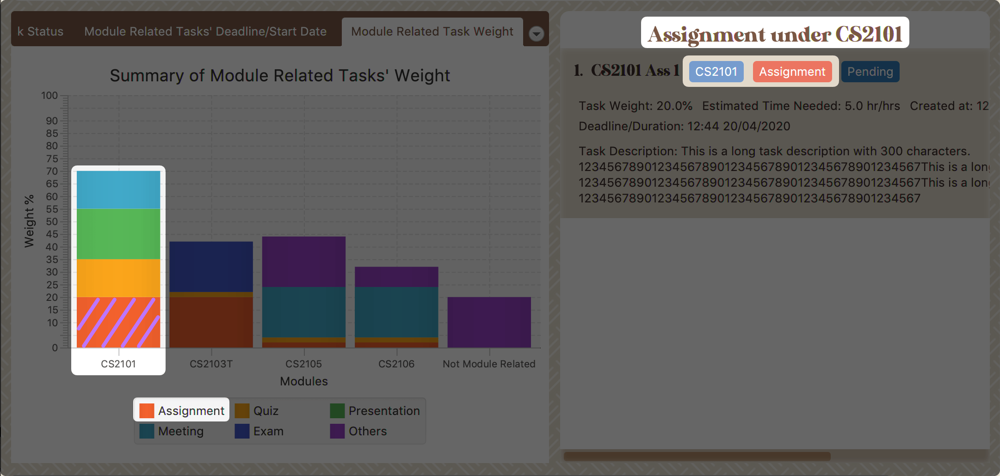Figure 77. Clicking on the block of 'CS2101''s assignments
-
|
As the data of charts are filled dynamically, thus it is possible that their labels can overlap together. This is an unfixed bug regarding the JDK which is caused by JavaFX chart off-sync. To get more information, you may refer to here. When this issue happens, you can use any command that can trigger chart updating to refresh the chart. |
4.6. Calendar
Constraints
-
The calendar GUI does not work well if the window size is set too small.
-
You will not be able to navigate too far into the past/ future using CLI.
The calendar feature allows you to visualise your schedule by displaying the number of task you have for the month. This allows students to plan their time efficiently.
The calendar feature can be toggled by clicking Calendar from the menu bar.

-
PreviousandNextbuttons can be used to navigate through previous and next months respectively.Current monthbutton brings you to the current date, which is in a blue border. -
Clicking on any date will show you all tasks for that day. Keep in mind that the Index shown in this panel cannot be used for other commands.

4.6.1. Navigation using CLI
Study buddy also allows you to navigate to any date in the Calendar.
-
To initiate fast navigation, simply key in
calendarinto the input line. -
Study buddy will ask you for a date
 Figure 80. Interactive prompt after keying in calendar
Figure 80. Interactive prompt after keying in calendarIn this example, we entered
20/04/2020. -
Input your date using the format shown and press enter once to proceed.
-
Press enter again to confirm your command.
You will now see the calendar for your selected date as well as all the tasks on that day.

4.7. Productivity
The productivity page shows insights related to your productivity over the past day, week and more. By keeping tabs on your past productivity, you can improve your future productivity. The productivity feature also gamifies your task management experience. Doing work has never been more fun!
4.7.1. Daily Productivity Tab
To get started, click on the Productivity menu button.
The daily productivity tab tracks the number of tasks you completed today.
As you complete tasks using the done command, you will get closer to your daily goal.
Completing your goal each day adds to your streak. Your streak will reset to zero if you fail to complete your goal.
You can set a daily goal for the number of tasks you want to complete using the command goal.
Refer to Section 4.1.13, “Goal” for more details on the goal command.
Note that the streak can only be completed once a day,
even if you change your goal after completing your streak.
|
4.7.2. Weekly Productivity Tab
On the weekly productivity tab, you can look back on your progress over the past week. The weekly tab displays information about your productivity for the past seven days.
Here, you can keep track of the total number of tasks you completed this week. You can visualize the number of tasks you completed using the bar chart shown.
Furthermore, you can keep track of the number of tasks that went overdue this week, so that you can be more punctual in the future.
| If you complete or add a task while looking at the weekly tab or productivity points tab, the color theme changes randomly. |
4.7.3. Productivity Points Tab

You can go to this tab directly by clicking your Productivity Point count on the top right of the menu. The Productivity Points tab displays your current Productivity Points (PP) and your progression.
You gain Productivity Points upon adding tasks, completing tasks, and using advanced features in StudyBuddy. On the other hand, you lose Productivity Points when your tasks go Overdue.
Here are some examples of how to obtain Productivity Points in StudyBuddy:
-
Adding a task: +1
-
Completing a task: +10
-
Completing your daily goal: +(points equivalent to daily goal)
-
Using advanced features; +1 (Explore StudyBuddy to find out more!)
-
Letting a task go Overdue: -1
| You start with some productivity points. They’re free! :) |
5. Command Summary
(Contributed by Souwmyaa)
-
clear Section 4.1.6, “Clear”
-
create mods Section 4.4.2.1, “Create Modules”
-
delete Section 4.1.7, “Delete”
-
view renamed Section 4.1.8, “View renamed”
-
filter Section 4.1.14, “Filter”
-
refresh Section 4.1.15, “Refresh”
-
calendar Section 4.6, “Calendar”
6. FAQ
Q: How do I transfer my data to another Computer?
A: Install the app in the other computer and overwrite the empty data file it creates with the file that contains the data of your previous Study Buddy folder (should be under data → taskList.json).
Q: How do I save my data?
A: Study buddy saves your data automatically after every command.